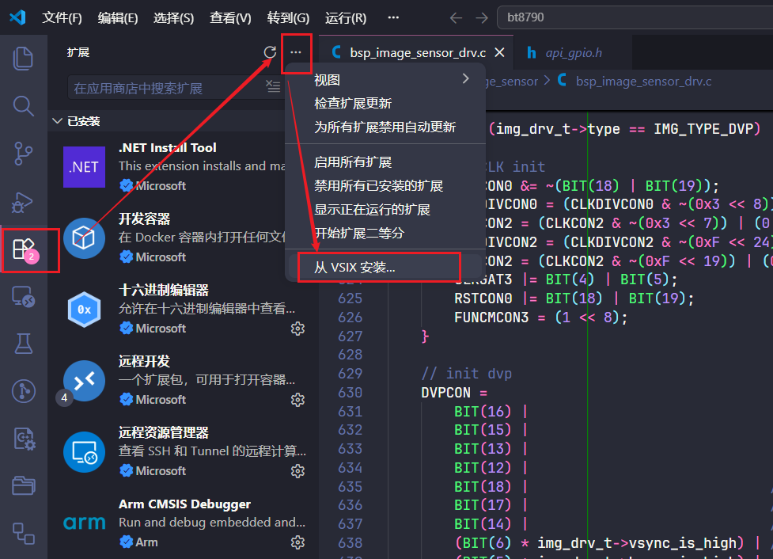

Environment setup
Tools required
tool |
use |
Verification method |
|---|---|---|
Het-X1 compilation tool chain |
Compile MCU firmware |
Run toolchain version command |
GNU Make |
Execute project build |
|
Python 3 |
Generate source code manifest and build documentation |
|
VS Code |
Editing, searching and project management |
Can open the warehouse directory normally |
PlatformIO IDE |
Serial terminal and other auxiliary capabilities |
The VS Code extension page shows that it is enabled |
HeT Plugin |
Project configuration and API accessibility |
Install and check version from controlled offline package |
USB to serial port driver |
Download and launch logs |
No exception mark in device manager |
Install the compilation tool chain
Unzip the project supporting tool chain to a fixed directory without spaces and Chinese characters, add its bin directory to the system PATH, re-open PowerShell and verify the compiler and make. The toolchain name and version must be based on the SDK delivery instructions.

Install serial port driver and assistant
Install the matching driver according to the USB to serial port chip on the development board.
Record the COM port in the device manager. Plug and unplug the device to confirm that the port will appear and disappear simultaneously.
Open the port using PlatformIO Serial Monitor or a team-specified serial port assistant.
The baud rate, data bits, stop bits and flow control are subject to the project
config.hand the board description.
The specific driver model, default serial port parameters and official download address are to be developed.
Install VS Code and plug-ins
Install the stable version from the VS Code official website. User Installer can be used on personal computers, and System Installer is recommended for shared development machines. Then install PlatformIO IDE; HeT Plugin is installed using the offline .vsix package provided by the team.
code --install-extension .\het-plugin.vsix


first build
cd .\projects\watch320
python gen-srclist.py
make
Check the timestamp of Output/bin/app.dcf after a successful build. gen-srclist.py will generate lists such as inclist.mk, and the function switches are maintained by the engineering configuration and X1 toolbox.
Download and debug after compilation is completed
Environment installation is only responsible for preparing tools；For actual compilation, firmware download, serial port log, upgrade and real machine verification, see Compile, download and debug。After completing the commands on this page, enter this page directly to execute the download. Do not use the serial port assistant as a burner.。
FAQ
Command not found: reopen the terminal and check for
PATH, don’t just try again in the old terminal.Python script failed: Confirm the Python version and current directory, and retain the first exception message.
The serial port cannot be opened: Close other serial port tools, re-plug and check the COM port.
Build successful but no firmware: Check the first compilation error and whether
Output/binis quarantined by security software.